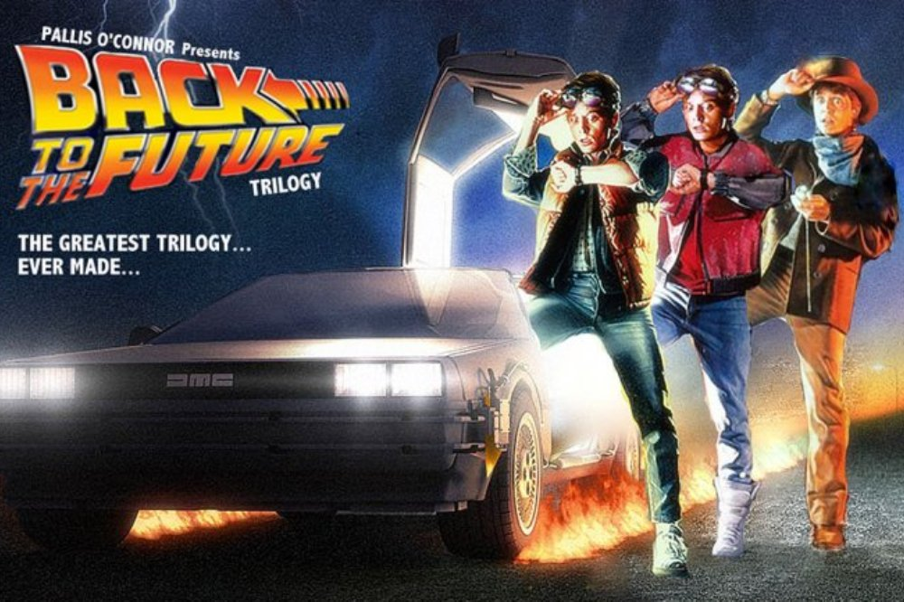

Some paragraph text.
La cinta transcurre en el año 1985, una época en la que el joven Marty McFly lleva una existencia anónima con su novia Jennifer. ... Marty se refugia en el coche y aparece transportado hasta 1955. Allí impide, a su pesar, que sus padres se conozcan y se verá en la obligación de hacer lo necesario para que vuelvan juntos.
